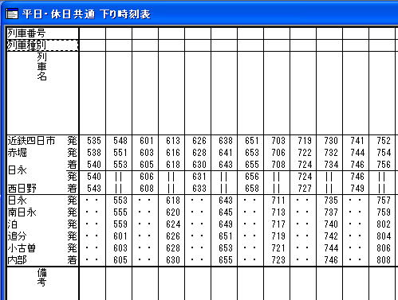
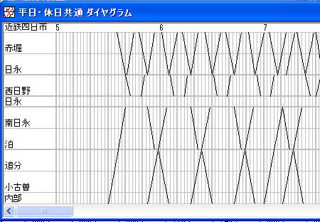
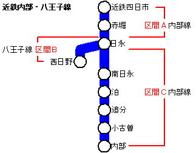
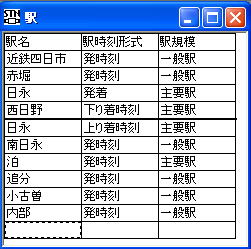

[駅] の [境界線] プロパティと、[駅時刻][駅扱] プロパティの選択肢 [経由なし] を使うことにより、支線が分岐する路線データを構成することができます。
ここでは、近鉄内部・八王子線を例にして、この手順を紹介します。
※ この路線データは、OuDiaのサンプルファイルとして同梱しています（参照：サンプルデータファイル）

（図：時刻表ビュー）

（図：ダイヤグラムビュー）
※ この例で使用している近鉄内部・八王子線の『路線ファイル』は、サンプルとして同梱しています。ファイル名は utsube.oud です。
説明にあたっては、
と表記します。

駅ビューでは、以下の設定を行ってください。
１． 本線起点（近鉄四日市）から分岐駅（日永）までの駅を入力してください。
属性は何でもかまいません。
２． 分岐駅（日永）では、以下の属性を指定してください。
[駅時刻形式]：[発着]
[駅規模]：[主要駅]
[境界線]：なし（チェックＯＦＦ）
３． 分岐駅（日永）から支線の終点（西日野）までの駅を入力してください。
途中の駅の属性は何でもかまいません。
４． 区間Ｂの終点（西日野）には、以下の属性を指定してください。
[駅時刻形式]：[下り着時刻]
[駅規模]：[主要駅]
[境界線]：あり（チェックＯＮ）
５． 区間Ｂの終点（西日野）の次に、区間Ｃの起点として、分岐駅（日永）を設定してください。
この駅には、以下の属性を指定してください。
[駅時刻形式]：[上り着時刻]
[駅規模]：[主要駅]
[境界線]：なし
これ以後は、区間Ｃの各駅を終点（内部）まで入力してください。
属性は、何でもかまいません。

（図：駅ビュー）
ここでは、下りの時刻表ビューをもとに入力方法を説明します。
上りの場合も同様の入力方法になります。
区間Ａ・区間Ｂの各駅に、駅時刻を入力してください。
区間Ｃの各駅の駅時刻はすべて [駅扱] を [運行なし] としてください。
区間Ａの起点と途中各駅に駅時刻を入力してください。
分岐駅（日永）では、区間Ｂの起点側（上の『日永』）の[着時刻]に、分岐駅の着時刻を入力してください。[発時刻]は空欄としてください。
分岐駅（日永）の発時刻は、区間Ｃの起点（下の『日永』）の[発時刻]に入力してください。
区間Ｂの途中駅・終点の駅時刻はすべて [駅扱] を [経由なし] としてください。
区間Ｃの各駅に、駅時刻を入力してください。